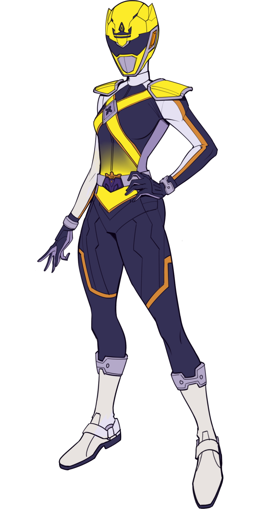

Itami's trusted second in command, the Starlit Sultana is a secret keeper. She infiltrates enemies and discovers weaknesses, weaknesses that she may of may not share with the team. Because Shini is a vampire, the Starlit Sultana uniform has added protections against sunlight and fire as well as receptacles to collect blood during combat for latter consumption. Sultana wields Svalinn, a shield able to turn back any attack.